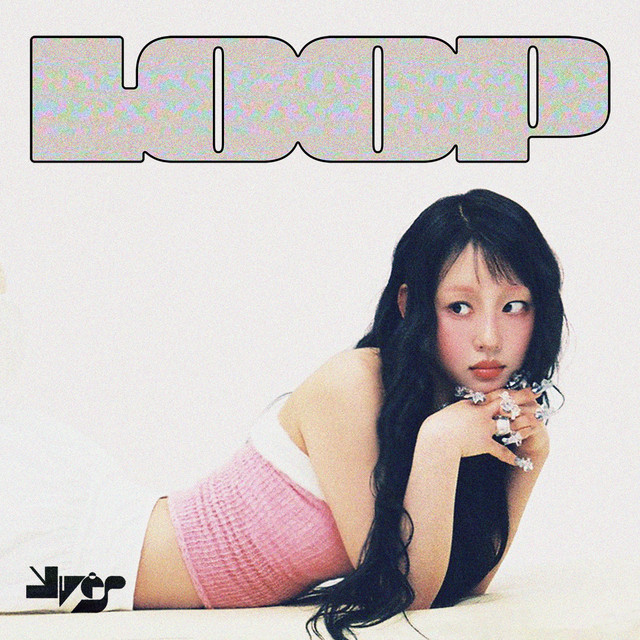
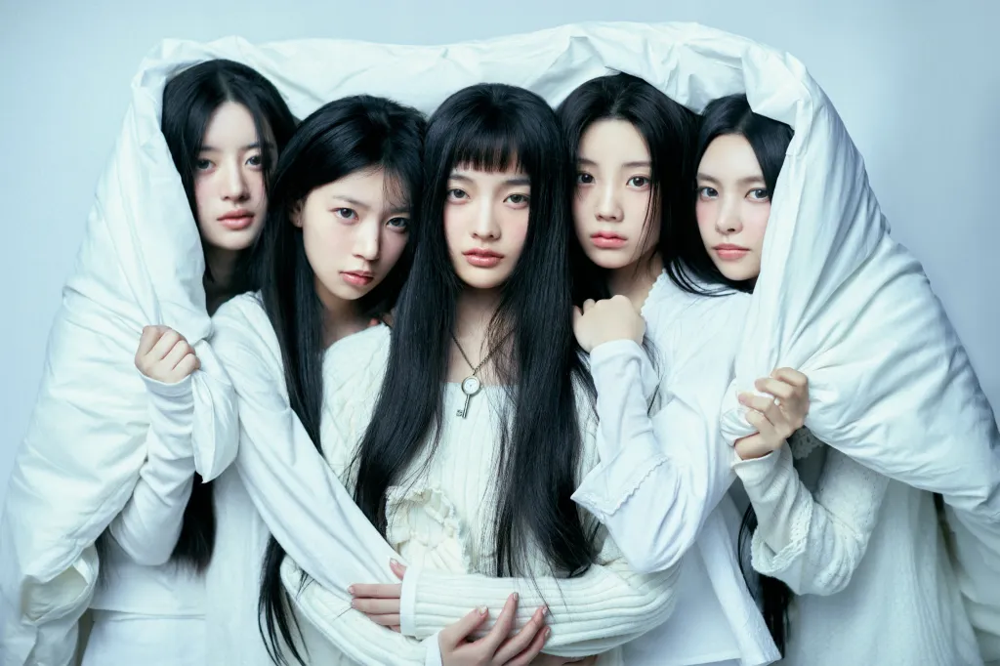
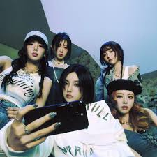
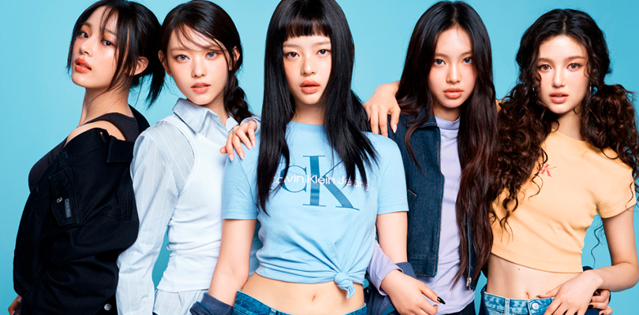

O PinkBeats é um espaço dedicado ao universo do K-pop, celebrando artistas e grupos que conquistaram milhões de fãs com sua música, estilo e criatividade. Yves (ex-LOONA): cantora carismática e talentosa, que marcou os corações com sua presença única e recentemente brilhou com o comeback LOOP. ILLIT: um dos novos grupos da 4ª geração, que se destaca pelo frescor, energia e pela forma como mistura inocência e atitude em suas músicas. ITZY: conhecidas por seu lema “All in us”, trazem empoderamento e confiança em cada performance, com hits que dominam os palcos e playlists. NewJeans: revolucionaram o K-pop com sua estética nostálgica e músicas cativantes, conquistando fãs ao redor do mundo com uma identidade única. O PinkBeats nasceu para reunir essa energia vibrante em um só lugar, unindo música, visuais e fãs que compartilham da mesma paixão